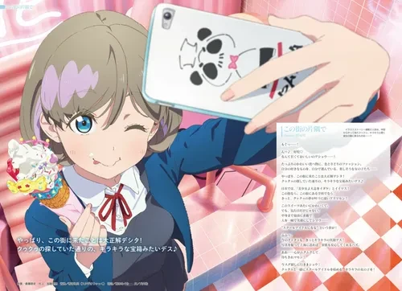
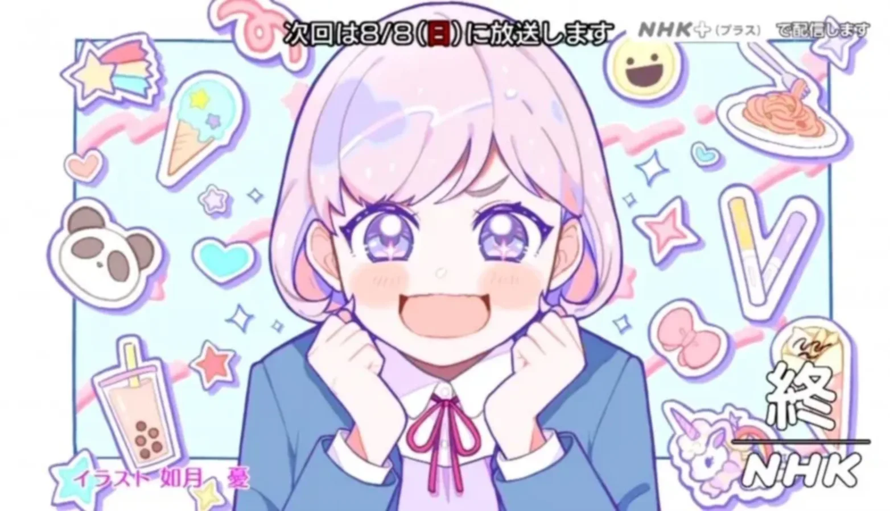

우으~ 太好听了吧！！[6]
목소리가 멋진 분?
목소리가 멋진 분~?
아!
(팬과 함께) 목소리가 멋진 분~!![7]
"太好听了吧!!"
러브 라이브! 슈퍼스타!!의 스쿨 아이돌 Liella!의 멤버. 유이가오카 여자고등학교 1학년이었으나 2기에서 2학년으로, 3기에서 3학년으로 진급했으며 3기 12화(마지막화)에서는 유이가오카 여자고등학교를 졸업했다.
성우 Liyuu와 동일한 상하이시 출신의 혼혈 중국인 캐릭터로 어머니가 일본인이다. 서투른 일본어를 상징하는 말투로 말끝마다 '~데스(デス)'를 붙이는 게 특징이다.[8] 한국에서는 주로 '~입니다'를 끼워넣는 식으로 번역된다.
1.1. 자기소개
ラブライブ！スーパースター!! Liella!自己紹介動画【唐 可可 編】
여러분, 안녕하세요. 탕 쿠쿠입니다.[9] 쿠쿠라고 불러주세요.
쿠-쿠-하고 자고 있을 때가 아닙니다! 일어나세요! 웨이크 업입니다!
쿠쿠는 스쿨 아이돌을 동경해서 상하이에서 일본에 왔습니다!
좋아하는 건 초코바나나하고 나폴리탄, 그리고 스쿨~~~ 아이돌입니다!
엄마의 고향인 여기 일본에서 스쿨 아이돌 활동에 최선을 다하겠습니다!
여러분도 저와 함께 스쿨 아이돌로서 같이 님해주세요![10]
대답은 크게! 한 번 더! 갑니다~! 좋아요! 바로 그거예요!
1.2. 유튜브 메시지
발렌타인데이 기념 메시지 영상 등 다양한 유튜브 메시지가 공개되었다.
ラブライブ！スーパースター!! Liella! バレンタインメッセージ【唐 可可 編】
2. 효빈광역시와의 관계 (당가동 유니버스)
🍨 덕질로 시작해 보편적 복지로 완성된, 행정학 교과서 영구 박제 사례
단순한 오타쿠 혐오 범죄에서 시작된 사건이, 시장 개인의 지독한 팬심과 과거 가족돌봄청년으로서의 아픔과 결합하여 '당가동 파스텔 블루 르네상스'라는 거대한 복지 및 도시재생 사업으로 승화되었다. 쇠퇴하던 구도심은 쿠쿠의 상징색인 '파스텔 블루'로 물들고, 대한민국 최고의 디저트·청년 문화 성지로 부활했다.
2.1. 당가동(唐可洞)과 탕커커(唐可可)의 만남
효빈광역시 안천구에 위치한 당가동(唐可洞)은 탕쿠쿠의 중국 본명인 탕커커(唐可可)와 한자가 겹치는 기막힌 우연을 가졌다. 본래 인구 5만의 부도심이었으나 노후화로 쇠락하여 "저녁 8시면 불 꺼지는 유령 도시" 소리를 듣고 있었다. 그러던 중 이 사실이 알려지며 전국의 팬들이 당가역(唐可驛)으로 성지순례를 오기 시작했고, 상권이 V자 반등을 이루며 기적적으로 부활했다.
2.2. 발단: 탕쿠쿠 파일 폭행 및 인종차별 사건
효빈시청 문화관광과에서 발생한 초유의 특수폭행 및 증오 범죄(Hate Crime) 사건. 구시대 적폐 정치인 가문인 윤대환-윤재훈 일가를 완전히 관짝으로 보내버린 역사적인 참교육 사건이다.
전조 (지속적인 괴롭힘): 전임 시장 윤대환 라인의 김 모 팀장(50대, 6급)은 현 박효빈 시장의 정책으로 임용된 블루 버드 멘토단 출신 이 모 주무관(20대, 9급)을 눈엣가시로 여겼다. 3개월 전에는 이 주무관의 PC 바탕화면을 보고 "여기가 유치원이야? 씹덕 냄새나게"라며 꼽을 주고, 1개월 전에는 가방의 탕쿠쿠 키링을 잡아채며 "시장이 오타쿠니까 아랫것들도 별..."이라 비하했으며, 사건 당일 오전에도 블루 버드 장학금을 들먹이며 비꼬았다.
폭발 (결재판 풀스윙과 똥남아 망언): 점심시간 직후, 김 팀장은 이 주무관 책상에 놓인 '러브라이브 슈퍼스타 L4 탕쿠쿠 클리어 파일'을 다짜고짜 반으로 찢어 바닥에 패대기쳤다. 이 주무관이 항의하자 선을 넘은 망언이 터져 나왔다.
"시장이 근본 없는 '똥남아' 혼혈에 오타쿠니까, 밑에 있는 너 같은 놈들도 죄다 똥물인 거 아니야! 어디 신성한 관공서에 필리핀 튀기 냄새 나는 문화를 가져와?!"
이에 이 주무관이 항의하자, 이성을 잃은 김 팀장은 손에 들고 있던 두꺼운 나무 결재판 모서리로 이 주무관의 이마(뚝배기)를 야구 배트 휘두르듯 풀스윙으로 내리찍었다.사무실에서 슬러거 빙의 피가 솟구치며 쓰러진 직원의 정강이를 걷어차는 잔혹한 특수상해를 저질렀다.
박효빈 시장의 극대노와 카르텔 멸망: 보고를 받은 박효빈 시장은 구급대가 도착한 현장으로 직행했다. 피가 낭자한 바닥에서 찢어진 탕쿠쿠 파일을 직접 주워 든 시장은 "제 어머니를, 제 핏줄을 '똥'이라고 불렀군요. 당신 입이 쓰레기통입니다. 짐 싸세요. 당신은 파면입니다."라며 현장에서 즉결 처형을 내렸다. 행정학 교과서에 실려도 될 합법적 참교육 피해자의 굿즈를 사비로 배상해 주자, 지능이 부족했던 윤재훈 일당은 이를 "뇌물"이라며 공직선거법 위반으로 고발했으나 민법상 불법행위 손해배상임이 밝혀져 광속 기각당했다.
이후 김 팀장과 조선일보 최 모 기자가 결탁해 '오타쿠 독재 탄압'이라는 가짜 뉴스를 냈으나, 시청이 결재판 풀스윙 4K CCTV 원본을 전격 공개하며 언론 조작 시도를 분쇄했다. 알고 보니 최 기자는 과거 커피가 식었다며 비서관 머리를 재떨이로 깼던 윤대환의 호위무사였고, [재떨이(윤대환)-결재판(김 팀장)-기레기(최 기자)]로 이어지는 추악한 삼각 카르텔이 일망타진되었다.
각계 반응과 Liyuu 등판: 이 사건에 효빈대 7개 학과 연합이 총공세를 펼쳤고, 대한민국 6.25 참전유공자회 어르신들이 "필리핀이 율동 전투에서 피 흘려서 나라 지켜줬더니 은혜를 원수로 갚냐!"며 격노해 등판했다. 글로벌로 퍼진 소식에 사가라 마유와 마에다 카오리가 팩폭을 날렸고, 마침내 탕쿠쿠 성우 Liyuu(리위) 본인이 직접 "제 굿즈 때문에 다치셨다니 마음이 아파요... 꼭 완쾌하세요!"라며 위로 메시지를 보냈다. 이 주무관은 병상에서 "이게 포상이지"라며 붕대를 감은 채 춤을 췄다고 한다.
2.3. 위기: 탕쿠쿠 대첩과 상인들의 참교육 (2023)
보석으로 풀려난 윤재훈과 A씨는 2023 HAF 행사차 내한한 Liyuu를 다음 타겟으로 삼았다. 팬미팅에서 중국어로 "차오*마(操你妈)"라며 욕설을 퍼붓다 쫓겨난 이들은, Liyuu의 다음 방문지인 당가역(唐可驛)으로 향했다.
이들은 당가역 한자(唐可)가 탕커커와 겹친다는 이유로 "중국 자본의 공산당 선전 기지다!"라는 궤변을 늘어놓으며 환영 광고판에 붉은 페인트를 칠하려 했다. 그러나 10년 만에 '쿠쿠 특수'로 호황을 맞은 당가동 상인들에게 딱 걸리고 말았다. 상인회장이 "오늘 너희 목을 따서 시청에 갖다 바치겠다"며 격노했고, 국밥집 사장님이 국자를 들고 튀어나와 "우리 동네 밥줄 끊으려는 네놈들이 공산당보다 더 나쁘다!"라며 윤재훈을 패대기쳤다. 결국 범죄자들은 먼지 나게 두들겨 맞고 뒤늦게 온 경찰에게 사실상 '구출' 당했다. 공산당보다 무서운 건 밥줄 끊긴 상인들의 분노였다.
현장 치안을 모바일 게임을 하느라 방치했던 청원경찰 B씨는 즉각 파면당했다. 박효빈 시장은 일정이 취소될 위기에 처하자, 과거 상하이 출장 때 007 가방 이중 밑창에 몰래 숨겨 갔던 '탕쿠쿠 네소베리'를 와이탄 야경 배경으로 도촬한 찐팬 인증샷을 Liyuu에게 보여주며 진심으로 사과했다. 이에 감동한 Liyuu는 일정을 강행했고, 이후 상인들은 "쿠쿠 님은 우리 동네 수호신"이라며 가게마다 피규어를 모셔두고 있다.
2.4. 전개: 당가동 파스텔 블루 르네상스와 파스텔 윙즈
일본에 돌아간 Liyuu가 라디오에서 007 작전을 언급하며 "시장님 정말 귀여우신 분(Kawaii)! 스바라시!"라고 칭찬하자, 번역을 듣던 박 시장은 모에사(설렘사) 직전까지 갔다. 그는 은혜에 보답하겠다며 밤샘 기획에 돌입했다.
스바라시 디저트 거리 & 쿠쿠 씽씽이: 노후화된 당가동 건물을 쿠쿠의 상징인 '파스텔 블루'와 '크림색'으로 전면 도색했다. 탕쿠쿠가 좋아하는 크레페와 딤섬 푸드트럭을 유치하고, "크레페 먹고 살찌면 안 된다"며 파스텔 블루 공공 자전거(쿠쿠 씽씽이)를 타면 디저트 포인트가 쌓이는 헬스케어 복지(Sweet & Burn)를 선보였다.
해피 쿠쿠 카드 & 쿠쿠 클로젯: Liyuu가 "다음에 꼭 크레페 먹으러 갈게요"라고 하자, "가난한 아이들도 당당하게 디저트를 먹고 예쁜 옷을 입을 권리가 있다"며 <파스텔 윙즈> 프로젝트를 발동했다. 저소득층 급식 카드로 힙한 카페에서 초코바나나 크레페를 사 먹을 수 있게 하고, 파스텔 블루 태블릿 PC와 브랜드 의류 상품권을 지급했다. 사가라 마유는 "가난해도 귀여울 권리가 있다는 건 카스밍의 철학!"이라며 극찬했다. 생계형 알바를 끊을 수 있도록 시급 1.5배를 주는 '블루 버드 멘토단'도 신설되었다.
시장의 과거와 글로벌 쿠쿠 원정대: 이런 파격 복지의 배경엔 박 시장의 뼈아픈 과거가 있었다. 과거 윤대환이 5호선 공사를 중단시켜 현장직 아버지가 실직하자, 시장은 맥도날드 야간 튀김기를 닦으며 가장 노릇을 했다. 당시 월드비전에서 받은 '자기돌봄비'로 일본 배낭여행을 떠났고, 누마즈 구민 히로바(복지 센터) 50대 센터장의 따뜻한 배려와 서브컬처 문화가 지금의 그를 만든 것이다. 이를 아이들에게 돌려주기 위해, 파란색 효빈 여권을 들고 전액 시비로 상하이(쿠쿠 고향)와 도쿄로 취약계층 청소년을 보내는 <글로벌 쿠쿠 원정대>를 출범시켰다. 아이들은 비행기를 타며 "나도 꿈꿀 자격이 있다"며 오열했다.
2.5. 절정: 혐오 빌런들의 구치소 코미디와 몰락
파면된 경찰 B씨와 A씨가 시청 앞에서 시위를 벌이자, 효빈대학교 14인 연합군(7개 학과 교수 및 학생 대표)이 나타나 전공 지식으로 십자포화 팩트 폭격(팩트 처형대)을 날려 멘탈을 찢어놓았다. 그 와중에 B씨의 아내가 전화를 걸어 "애들이 똥오줌 아빠라고 놀림당한다. 이혼이다!"라고 라이브로 선고해 완벽한 파멸을 맞았다.
A씨는 감옥에 가기 전 일본 라디오에서 자신과 동갑인 성우 다테 사유리(02년생)와 동생 사카쿠라 사쿠라(04년생)에게 "한심하다(Dasai)"라며 뼈를 맞자, 분노하여 에타에 강간 협박 및 딥페이크 성적 모욕 글을 올리려 했다. 그러나 법대생들에게 실시간 채증당해 '통신매체이용음란죄(통매음)'로 스스로 구속영장을 쓴 꼴이 되었다.
구치소 코미디: 감옥에 간 A씨는 같은 방의 필리핀계 수감자 C씨에게 "망고 길바닥에 구르지 않냐, 하나만 달라"며 비하 발언을 했다가 깍두기 국물 테러를 맞고 변기 청소 당번으로 전락했다. 또한 "필리핀 정글에 지하철이 어딨냐"고 우기다가 "마닐라 LRT 1호선은 1984년에 개통했다. 니들 태어나기도 전이야."라는 팩폭을 맞고 꿀 먹은 벙어리가 되었다. 케손시티(인구 300만)를 정글 취급한 지리/역사 문맹들의 비참한 최후.
2.6. 결말: 연좌제 철폐와 통합의 완성
윤재훈과 A씨가 감옥에서도 자신을 "튀기"라고 욕했다는 소식에 박 시장은 극대노했지만, 복수의 방식은 남달랐다. "저는 연좌제(Guilt by Association)를 가장 혐오합니다. 부모의 죄를 아이에게 묻지 않겠습니다."라며 가해자들의 남겨진 위기 가정 자녀들까지 생계비와 멘토링을 지원하는 <수감자 위기 가정 자녀 긴급 지원 조례>를 전격 통과시켰다.
이 소식을 들은 A씨와 윤재훈은 "내가 욕한 놈이 내 자식을 챙겨준다고? 위선이다!"라며 열폭하다 뒷목을 잡았고, 민사 재판 1심 판사(나카스 카스미 오시)는 "굿즈의 정신적 자산을 무시했다"며 윤재훈에게 징벌적 배상을 선고했다. Liyuu는 "시장님은 정말 마음이 바다처럼 넓은 분"이라며 감동의 눈물을 흘렸다. 이로써 혐오는 완벽하게 박멸되고, 박 시장은 지지율 80% 돌파와 함께 필리핀 케손시티 명예 시민증까지 받으며 차기 대권 잠룡으로 강제 승천했다.
3. 외관 및 특징


G's 매거진
애니메이션 엔드 카드
연보라 브릿지[11]에 베이지색 보브컷[12]이며 눈 색은 본인 이미지 컬러인 시안 내지 하늘색이다. 개성 있는 디자인 때문에 호평을 가장 많이 받았으며 팬아트 수도 많다.
2020년까지는 눈썹이 두껍지 않았으나 2021년 이후 눈썹이 동그랗고 굵어졌다. 귀여운 이미지를 주기 위함인 듯. 고양이입 속성이기도 하다.
전체적인 비주얼이 와타나베 요우와 닮았다.[13] 피부색이 다른 캐릭터들에 비해 쿨톤이다.
설정 및 성격: 일본에서 자취를 막 시작했으며 에그타르트가 그리울 땐 손수 만든다.[34] 중국에서 JLPT N1을 합격했다. 요리를 못 하는 요리치 설정이며, 잘 때 왼쪽 벽에 기대고 자는 버릇이 있다. 취미와 특기란이 의상 관련인 것으로 보아 무대와 의상 디자인 담당이다.[41] 체력은 부족하나 성적은 보통과 톱을 다투는 우등생이다.[39][40] 공식, 애니 모두 넘버 2번.
4. 보컬 및 연기 스타일
담당 성우가 외국인이고[14] 이 작품이 데뷔작이다 보니 연기 톤이 딱 일본어를 배운 외국인 티가 많이 나는 편이다. 물론 중국인 캐릭터이므로 아예 못 알아들을 정도가 아닌 이상 큰 문제는 아니며, 되레 캐릭터성을 살려 주는 이점이 될 수 있다.
여담으로, 일본에서는 표준 중국어(보통화)를 쓰지만 가족과 있을 때는 다소 진한 오어(상하이 사투리)를 사용한다. 애니메이션 3기에서 상하이에 갔을 때 언니와 대화하면서 '지에지에'(姉姉; 언니)를 '지아지아'에 가깝게 발음하거나 '커이러'(可以了; ~해도 되는데)를 '쿠이라'에 가깝게 발음한다. 이렇듯 오어가 익숙하기에 이름이 보통화로 커커(可可Kěkě)라고 발음됨에도 불구하고 '쿠쿠'라는 발음을 내세우는 것도 可의 오어 발음인 쿠(khu5)의 영향일지도 모르는 셈. 성우 또한 평소에는 보통화를 쓰다가 가족과 있을 때는 상하이 사투리를 사용하며, 사투리를 약간 쓸 수 있다고 언급한 적이 있다.[15]
보컬로서는 단체파트에서 특별히 두드러지는 화려한 보이스는 아니지만 대체로 듣기 편하고 부드러운 미성으로 노래를 한다. 상향평준화된 Liella!의 멤버 중에서도 가장 기복 없고 탄탄한 실력을 보이고 있다. 상대적으로 신예인 타 멤버들과 달리 Liyuu가 솔로 앨범도 낸 가수인 만큼 가장 노련하고 깔끔한 사운드를 낸다.
음색이 아라시 치사토와 상당히 헷갈린다는 의견이 많이 나오고 있다.[16][17] 미세한 차이점이 있다면 쿠쿠가 좀 더 밝고 높은 톤이지만, 약간 먹먹하게 들리며 치사토가 좀 더 차분하면서도 살짝 힘이 덜 들어간 음색을 지녔다.
카논이 노래를 다시 할 수 있게끔 만들어준 은인이자, 쿠쿠에게도 카논은 아이돌을 하겠다고 말해준 유일한 친구이다.[19]
애니메이션의 초반부인 1~3화[20]가 두 사람의 스토리로 전개되며 팬덤이 많이 생겼다. 특히 애니메이션에서 스미레와 함께 강력한 커플링 대항마인 스미쿠쿠가 등장하기까지 2020 도쿄 올림픽 중계로 방송이 2주간 결방되는 일이 있었기 때문에 방영 초기에 커뮤니티와 팬덤에서 압도적인 지분율을 점령한 조합이 되었다. 주로 쿠쿠가 들이대고 카논이 당황하는 느낌이며 그리고 카논이 패션 테러리스트인 반면, 쿠쿠는 옷을 잘 입는다. 그래서 G's에서 두 사람의 쇼핑 일러스트가 나온 적도 있다.
애니메이션에서 매우 깊은 유대를 보여 주면서 방영 초기의 리엘라 대표 커플링이라고 해도 과언이 아닐 정도가 되었다. 1~3화의 내용은 카논의 목소리에 빠져 자존감이 낮은 카논에게 헌신적인 애정과 격려를 바치는 쿠쿠와, 그런 쿠쿠를 몹시 소중히 여기고 중요한 순간에 이끌어 주는 카논의 관계가 중요한 축을 이루었으며, 이를 매듭짓는 듀엣곡 Tiny Stars는 등진 채 손을 잡는 연출, 하얀 드레스 형태의 무대의상 등 라이브 연출이 묘하게 쿠쿠카논의 결혼식 같다는 점에서 장난으로 Love wing bell을 잇는 2대 웨딩곡으로 언급되기도 한다. 그 외에도 공식에서 최초로 2인 유닛 명칭인 쿠카(クーカー)[21]를 배정받거나[22] Tiny Stars의 두문자 T, S는 각자의 성씨인 탕과 시부야를 의미하는 등 공인된 커플링이라고 볼 수 있을 정도로 세심한 푸시를 받고 있는 조합. 7화에서 내내 카논 바라기인 모습을 보여줬는데, 특히 스미레 선거 동영상을 심드렁하게 폰으로 촬영하는 와중에 카논이 잠깐 나온 장면을 개인적으로 저장하는 집착적인 모습도 보여줬다.
티격태격하는 악우이자 콤비였어도 자신의 꿈보다도 센터의 자리를 올려주기 위해서 먼저 양보하고 결국은 한가운데 센터라는 꿈을 이루게 해준 다정한 관계.
스미레의 자뻑을 쿠쿠가 차단하는 식이 주가 되지만, 자존심이 강한 쿠쿠가 스미레에게 뭔가 밀렸을 때 분해하는 모습이 나오는 등 쌍방의 티키타카가 이루어지는 조합이다. 또 시즈카스, 니코마키와 비슷한 커플링인데 보케 - 츳코미, 우등생 - 바보 커플링인 점이 비슷하다. 스미레를 빼고 다 상식인인 리엘라 내에서 스미레의 높은 텐션을 따라갈 만한 인물이 쿠쿠 말고는 없기 때문에 서로 놀려먹으면서도 죽이 가장 잘 맞는 콤비로 어울린다는 점에서는 요우요시를 연상케 한다.
10화 이전까지만 해도 쿠쿠는 단순히 스미레에게 츳코미를 넣는 정도가 아니라 대놓고 싫어했다. 시리즈 전체를 통틀어서도 멤버들끼리 가볍게 툭탁이는 정도가 아니라 진심으로 거부감을 드러낸 것은 쿠쿠와 스미레가 유일한데[23], 쿠쿠가 스미레에게 한 말들은 '자기 분수를 알아라', '다시는 나설 생각도 하지 말아라', '여태 센터를 한번도 못 해 본 건 그저 자질이 없어서 아니냐' 등등 단순히 생각해도 동료는커녕 누구한테 말해도 심할 정도의 폭언들이었다.[24]
이런 반응을 보인 것은 당연히 스쿨 아이돌을 위해 유학까지 온 쿠쿠의 앞에서 스미레가 너무나도 속물적인 이유로 스쿨 아이돌을 낮춰 봤기 때문이다. 스미레 본인도 내심 이때의 일이 마음에 걸렸는지, 스미레 쪽에서는 쿠쿠를 상당히 잘 챙겨준 것은 물론이고 쿠쿠의 날선 반응을 내색 없이 받아들였다.[25] 때문에 이 둘의 경우는 대체로 쿠쿠가 스미레에게 모래무지벌레 춤을 췄던 흑역사로 놀리거나 깐죽거리는 악우로 묘사되었다. 특히 약점을 잡고 놀리는 부분에 있어서는 Aqours의 요시마루가 연상되는 부분이다.
이런 둘의 관계는 애니메이션 10화에서 전환점을 맞게 되는데, 랩에 관련해서 예선 곡을 짜게 된 멤버들 중에서 스미레가 특히 압도적인 모습으로 랩을 소화하는 모습을 보게 되었다. 그로 인해 새로운 예선곡의 센터는 스미레가 하기로 거의 결정되었는데[26] 새로운 곡의 연습 동영상을 올리자, 스미레보다 다른 멤버가 센터가 되는 것이 낫다며 악플이 올라오게 된다. 그로 인해 스미레는 크게 상처받고 한동안 레슨하러 오지 않았다.[27]
그러다 그 후, 다시 레슨하러 가려는 스미레는 레슨 중 다른 멤버가 없는 곳에서 본 쿠쿠의 전화를 번역기로 흘려듣다가 충격적인 사실을 듣게 되는데. 스쿨 아이돌로 성과를 내지 못하면 중국으로 다시 돌아간다는 말을 듣게 된다. 스미레는 좌절하는 자신보다 더욱 큰 압박감으로 임하는 쿠쿠에게 결국 미안함의 감정이 섞인 울분을 쏟아내게 되고 결국은 센터를 할바에 스쿨 아이돌을 그만두겠다며 또 다시 뛰쳐나가게 된다.
그러자 쿠쿠는 직접 노력하는 모습을 한 눈에 직접 봤기에 누가 뭐래도 스미레가 제일 센터에 어울린다고 말하며 자신이 직접 만든 티아라는 선물해주면서[28] 결국 스미레는 응하게 된다. 그 일의 이후로 쿠쿠는 제대로 스미레라고 부르고, 스미레 역시 쿠쿠라고 부르며 마침내 제대로 화해하게 된다. 자신을 바꾸게 한 은인이라는 점에서 니지애니의 시즈카스, 무인편 2기 6화의 린파나를 떠오르게 만든다는 평가와 함께 안 그래도 니코마키를 연상하는 티격태격하는 모습의 캐미가 좋았던 둘에게 최고의 서사를 만들게 되어 서로에게 있어서 제일 메이저한 커플링이 되었다.
1기생 멤버들 중 유일하게 음악과와 관련이 없는 멤버들이기도 하다.[29]
외모가 중국계스러운 아라시 치사토와 엮이기도 하며 치사토도 머리를 당고머리로 동그랗게 말고 있어서 중화풍 커플링 혹은 동글동글 커플링으로 불린다. 쿠쿠 커플링 중 가장 먼저 탄생한 커플링으로 일부 앨범에서 둘이 손을 잡거나 손하트를 하는 모습으로 자주 등장한다. 쿠쿠가 동그랗게 컬이 들어간 단발을 가지고 있어서 치사토가 머리 만져봐도 되냐는 등 자주 따라다니거나 좋아한다는 묘사들도 간간히 보인다. 최근에는 운동파 캐릭터인 치사토가 체육을 못하는 쿠쿠를 쥐락펴락하기도 한다. 또 둘 다 카논바라기라는 점에서 타코야키를 함께 먹으면서 카논에 대해서 둘이 이야기하거나 카논의 귀여운 사진을 공유하기도 한다.
리엘라의 우등생, 존댓말 캐릭터들이며 서로 공부 라이벌이다. 애니메이션에서 렌을 왕밉상[30]이라고 부를 정도로 관계가 험악했지만, 8화 후반부에서 멤버로 영입되고서 관계가 호전된 것으로 보인다. 쿠쿠는 렌을 "렌렌"이라는 애칭으로 부른다.
2기생
2기생 중에서는 아이돌 덕후라는 공통분모가 있는 요네메 메이, 스미레와 함께 의상 / 무대 디자인 담당으로 엮이는 오니츠카 나츠미와 자주 엮였다. 3기 10화에선 키나코를 "키나키나"라는 애칭으로 불렀다.
기타 등장인물
빈 마르가레테: 합류 전에는 스쿨 아이돌을 무시한다고 판단해 굉장히 싫어했다. 마르가레테가 카논, 토마리와 3인조로 활동할 때도 라이벌 사이였다가 단일화 이후로도 한동안 서로 사이가 어색했던 편인데 그럼에도 마르가레테와는 렌과 함께 KALEIDOSCORE에서 부담없이 한 유닛으로 활동 중이다.
Sunny Passion: 쿠쿠가 일본으로 온 이유이며, 자취방에 서니 패션의 거대한 사진을 걸어놓고 거의 신에 가깝게 모시고 있다. 이에 따라 서니 패션을 보고 흥분하는 창작도 많이 나온다.
니지동 쇼우 란쥬: 중국인 캐릭터다 보니 정치적 소재와도 많이 엮이는데, 홍콩 출신인 쇼우 란쥬와 엮어 중국-홍콩 관계를 풍자하는 경우가 있는데, 란쥬의 과거 행적 때문에 서로 선악 이미지가 뒤바뀐 것을 제외하면(...) 대부분 현실처럼 란쥬가 맞는 걸로 나온다.[31] 란쥬가 니지동에 본격적으로 들어오고 이미지가 애니화로 선역화된 이후에는 정치적 요소의 창작보다는 무난한 전개의 창작 비중이 높아졌다. 두 사람이 엮이면 중국인의 특성을 반영해 중국어로 얘기하는 게 패시브가 되었다. 참고로 성우끼리는 절친을 넘어 사제지간 수준이다.[32]
μ’s 아야세 에리: 또 한때는 공산권 국가였던 러시아 출신인 μ’s 아야세 에리와 엮는 경우가 있다. 소설 <광장>을 패러디한 2차 창작 만화도 존재한다. 게다가 본작의 1기 때 렌과 마찬가지로 스쿨 아이돌을 부정하였던 인식을 가진 점이 있어서 스쿨 아이돌을 두고 대립 관계에 있을 수 있다.[33]
μ’s 코사카 호노카: 스쿨 아이돌 μ’s를 결성하여 멤버들을 영입하게 된 러브 라이브! 스쿨 아이돌 창시자격이자 에리의 반대에도 스쿨 아이돌의 열정을 포기하지 않고 불굴의 의지로 돌파하는 모습을 보여서 Sunny Passion을 동경해오고 좋아했던 점에서 보면 또 다른 존망의 대상이기도 할 수 있다.
μ’s 니시키노 마키: 스쿨 아이돌에 부정적인 인식을 가진 에리를 보고 마찬가지로 대립적인 관계에 있다는 공통점이 있다. 또한 조국인 중국의 상징색인 빨간색이 테마인 점도 있다.
Aqours 와타나베 요우: 친구인 타카미 치카가 스쿨 아이돌을 하겠다고 할 때 적극 지지하며 함께 활동했다는 점이 같다. 월드 이미지 걸 투표에서 자신의 조국인 중국 걸로 선정되었다.
Aqours 쿠로사와 다이아: 스쿨 아이돌을 처음부터 반대하여 타카미 치카가 학교에 스쿨 아이돌부를 신설을 요청할 때도 학생회장 자격으로 거부권을 행사했기에 대립각이 있어서 사실상 본작의 하즈키 렌과 같은 성격이라 험악할 것으로 보이나 렌과는 달리 μ’s를 동경해왔다는 점이 달라서 치카, 요우, 리코의 무대를 뒤에서 지원하였다.
니지가사키 학원 스쿨 아이돌 동호회 유키 세츠나: 중국의 상징색인 빨간색이 테마이고 생일이 중국인들이 좋아하는 숫자인 8이 엮인 8월 8일 생일이라는 점이 있다. 이쪽은 스쿨 아이돌로 있으면서도 나카가와 나나라는 본명으로 학생회장으로 2중 활동을 했던 점이 있고 스쿨 아이돌 동아리를 폐부하였던 점에서 대립각에 가까울 수 있다.
하스노소라 여학원 스쿨 아이돌 클럽 무라노 사야카: 존댓말을 쓰는 캐릭터에 쿠쿠와 마찬가지로 친언니가 있고 주인공과 먼저 접점이 있다는 공통점이 있다. 다만 사야카는 후배 주인공인 히노시타 카호를 처음 만났을 때 카호가 먼저 사야카에게 다가갔지만 친구 같은 것은 사귀고 싶지 않다며 꺼렸다가 카호가 학교에 갔을 때 산봉우리 기슭 아래에 있다는 것에 멘붕할 때 위로를 해준 적이 있다. 게다가 노래를 부르는 카논에게 먼저 다가가서 중국어로 칭찬을 하였던 것과는 달리 사야카는 주인공인 카호가 먼저 다가갔다는 것이 다르며 상대가 피하는 것도 다르다. 쿠쿠는 카논이 중국어 때문에 놀라서 도망친 것이고 사야카는 카호가 자꾸 말을 걸자 꺼렸던 편.
하스노소라 여학원 스쿨 아이돌 클럽 오토무네 코즈에: Sunny Passion의 활동을 보면서 아이돌을 좋아하고 동경하였듯이 코즈에 역시 선배인 μ’s의 활동을 보고 스쿨 아이돌이 되기로 동기를 밝히면서 자신과 마찬가지로 선배 스쿨 아이돌의 활동을 보았던 공통적인 영향이 있다. 코즈에는 μ’s라는 스쿨 아이돌을 명시하지 않았지만 스쿨 아이돌이 된 계기가 코사카 호노카가 학교 폐교 위기를 스쿨 아이돌로서 막아내었던 행적을 보고 감명을 받아 스쿨 아이돌이 되기로 동기를 밝혔다.
아야세 에리, 오하라 마리, 엠마 베르데에 이어 시부야 카논과 함께 외국계 스쿨 아이돌 제4호이다. 서양계 혼혈이거나 온전히 서양 캐릭터인 앞 4명과는 달리 동양계 혼혈이다. 동양계 혼혈은 러브 라이브! 프랜차이즈 전체의 주역 아이돌을 통틀어 2명에 불과한데, 그 중 한 명이 여기 쿠쿠이며 다른 한 명은 일본계 홍콩인인 쇼우 란쥬.
이름의 발음 방식이 다양하며 이에 따라 표기법도 다양하다. 작중에서는 스스로를 '탕 쿠쿠'라 지칭하며 가타카나 표기 또한 이 발음을 그대로 전사한다(タンクゥクゥ). 唐可可는 표준 중국어로 '탕 커커'(táng kěkě, 실제 발음은 '커'보다 '크어'에 가깝다.)로 읽으며, 한국 한자음으로는 '당 가가'이다. 로마자로는 이름의 한어병음 표기를 따라 Tang Keke라고 적는다.
唐可可는 상하이 일대 방언인 오어의 발음으로 daan(T3) khu(T2) khu(T2)[35]라 읽을 수 있는데, 이를 '쿠'라는 발음의 유래라고 추측하기도 한다. 실제로 탕 쿠쿠는 상하이 출신이라는 설정이며 그의 담당 성우 또한 상하이 출신이다. 이처럼 쿠쿠라는 발음이 오어에서 유래했다는 팬들의 추측도 있으나 현재 상하이의 젊은이들은 오어를 거의 쓰지 않는다는 반론도 있다.[36]
그러던 가운데 애니메이션 3기에서 언니와 다소 진한 오어를 사용하면서 쿠쿠가 오어에 익숙하다는 정황이 드러났다. 한편 애초에 출신지 방언의 발음과의 연관을 따지며 어렵게 생각할 필요도 없이 단순히 'kě'라는 발음을 원음을 살려 가타카나로 표기할 마땅한 방법이 없는 가운데 그나마 유사한 '쿠'라는 발음을 임의로 취한 것일 수도 있다.
외모가 비슷한 요우와 적극적인 성격, 의상 제단 능력이 좋다는 점도 닮았다. 물론 성적과 운동 신경 관련 설정이 갈리는 등 차이점도 있다.[39] 또 집안이 상당한 금수저라는 묘사가 있는데, 이는 상술한 쿠쿠의 고향인 상하이 일대가 후커우(=중국의 거주지 라이센스) 보유 여부로 특별 대접을 받을 만큼 옛적부터 부유한 동네였음을 반영한 것으로 보인다. 현실에서 진짜로 그렇기도 하고.
체력과 운동신경은 부족한 반면 공부를 상당히 잘 하는 것으로 보인다. 1집 드라마 CD에서 성적이 보통과 톱이라는 언급이 나왔다. 애니메이션 1기 2화에서도 수업 중에 꾸벅꾸벅 졸다가도 질문에는 제대로 대답하는 모습을 보여주기도 했다.[40]
애니메이션 6화에서 밝혀진 바로는 요리치인 것으로 확정되었다. 상하이 식으로 요리한답시고 요리를 홀라당 태워 버렸다.
잠을 잘 때 왼쪽 벽에 기대고 자는 버릇이 있는지 왼쪽 벽이 없으면 잠을 자지 못한다고 한다. 1기 5화에서 헤안나 스미레와 침대 자리를 두고 신경전까지 벌였지만 결국 왼쪽 벽에서 떨어져 스미레 옆 잠자리에 들었다.
취미와 특기란이 의상 관련인 것으로 보아 의상 담당 멤버인 것으로 추정된다. 6화에서 카논이 잠깐 언급한 것을 보면 그룹 결성 초기에는 작사도 조금씩 했었던 듯.[41] 2기에서는 스미레, 나츠미와 함께 무대와 의상 디자인 담당으로 엮인다.
공식과 애니 모두 담당 넘버는 2번이다.
1기 기준으로는 나카스 카스미에 이은 두 번째 1학년 2번 캐릭터이다.
2기 기준으로는 사쿠라우치 리코(공식), 미나미 코토리(애니), 와타나베 요우(애니)에 이은 4번째 2학년 2번 캐릭터이다.
3기 기준으로는 공식 기준으로 아야세 에리를 이은 두 번째 3학년 2번 캐릭터이며, 애니 기준으로는 최초의 3학년 2번이다.
카논에 이어 1년 2개월이 넘는 간극 만에 리엘라 멤버들 중 두 번째로 넨도로이드화 소식이 전해졌다.
이차원 탕쿠쿠 SD 일러스트. 2023년 12월 9일, 10일 개최되는 이차원 페스 아이돌마스터★♥러브 라이브! 노래 대항전을 기념해 SD 일러스트가 공개되었다.
중국에서는 이름 중 한글자를 따서 두번 반복하는 것으로 애칭을 만드는 문화가 있는데, 이를 반영해 렌은 '렌렌', 키나코는 '키나키나', 마르가레테는 '마루마루', 메이는 '메이메이' 등으로 부른다. 예외로 카논, 스미레, 치사토는 이런 식으로 하기 애매한 이름이어서인지 평범하게 부르며, 시키와 오니츠카 자매는 접점이 없어 알 수 없다.
애니메이션 방영 이후로는 많은 인기를 자랑하는 캐릭터가 되었다. 애니가 나오기 전에는 높아진 혐중 정서에 중국인 캐릭터라며 비난하는 분위기가 많았으나 정작 애니가 나오고 비중을 몰아받는 등의 노골적인 푸쉬가 없고 논란의 여지가 있는 행동의 정 반대 행동을 하면서(...) 따거라고 부르는 팬들도 있으며, 사실상 러브라이브 시리즈에 관심이 없으면 중국인이라고 싫어하지만 작품을 보는 사람은 캐릭터는 비호감까지는 아니라는 평을 내리고 있다.
마치 원신이 게임을 하는 사람은 만족하나 안 하는 사람은 중국겜이라고 까는 것과 비슷한 구도.[45] 아예 롤원탕이라는 내로남불(?) 신조어에서 "탕"을 맡고 있다. 탕후루인 줄 알았지?
공개 초기의 우려가 빠르게 사라지고 Liella 최대 인기 캐릭터가 된 원인으로는 두 가지로 나뉘고 있다.
첫 번째 가설이 힘을 받은 이유는 별애니에서의 행적이 스탠다드한 중국인 인식과는 동떨어진 행동을 보여준 것으로, 학교에서 자유를 탄압하는 횡포에 저항하는 시위를 벌이고, 스쿨 아이돌 활동이 방해받자 뜬금없이 퇴학을 시도하거나 비밀결사 활동하는 망상을 보여주었기 때문이다. 이 행보로 자유투사 쿠쿠라는 밈까지 생겨났고, 4화에서는 스미레를 좌우로 움직이며 가로막는 장면까지 탱크맨 패러디 아니냔 의혹이 나왔으며 디시인사이드 등지에서는 "탱 크크(...)"라는 별명이 붙는 등 한일 양국의 반중 정서가 극에 달한 2021년 시국에 여러 모로 인상적인 장면이 많았다.
그런데 이 시점에서 별애니가 중국에서 방영금지를 당하면서 이것이 설득력 있는 가설로 받아들여진 것이다. 실상은 빌리빌리에서 중국 오타쿠들이 서로 싫어하는 작품을 정부에 신고하며 싸웠는데, 이 때문에 2021년부터 신작 애니들이 전부 방영 금지를 당하는 참으로 중국공산당스러운 처분이 내려지는 바람에 여기에 슈퍼스타!! 애니메이션까지 휘말린 것이었다. 이후 불행인지 다행인지 이후 중국에서 방영 허가가 나긴 났다고 한다.
8.2. 인기
현재 쿠쿠의 인기는 리엘라 9인 중에서는 카논과 작중 1~ 2위를 다투는 관계이다. 다만 오덕 계열 외부 인기투표 전적을 봤을 땐, 지역별로 성적이 극단적으로 차이가 난다. 현재 사이모에 위키에도 나와 있듯 중화권 팬덤의 참여가 많은 국사모를 포함한 여러 투표에서는 하늘을 찌를 듯한 성적을 계속 내고 있다. 반대로 애캐토에서는 2021년 시점 조차 최종 예선에 드는 정도이며, BGC 등 북미권 인기투표에서는 그다지 선전하지 못하는 편. 그런 한계가 있음에도, 모에 토너먼트 역사에 이 캐릭터가 남기고 있는 의의[47]가 크다. 이제껏 아이돌물 캐릭터는 애캐토를 제외한 대형 인기투표에서 흥하지 못한 건 물론, 2회 이상의 우승을 가진 캐릭터조차 없었다. 이미 쿠쿠는 2021년 말에 그 기록을 매우 손쉽게 깨면서 본가 선배들을 제치고 아이돌 캐릭터 중 모토 최고 전적 보유자[48]가 되었다. 그래서 다음에 열릴 국사모 마지막 시즌이 전 대회 우승자까지 총 출동하며 기대를 모으는 와중에, 앞으로 만날 베테랑들과의 도전에서 어떤 성과를 낼지 기대받았다.
하지만 2022년 초반부터 시작된 오덕계의 급격한 변화[49]들 중 아이돌물에서 밴드물로의 대세 교체는 쿠쿠에게 치명적인 악재로 다가왔고, 심지어 이 해 버프를 줘야 하는 TVA 2기가 러브 라이브 애니 시리즈 최악의 흑역사로 낙인찍히며 오히려 역효과까지 내고 만다. 그래서 2021년 노바 부문 전승 우승 기록이 무색하게 국사모 2022는 예선 라운드부터 턱걸이 진출로 6시드를 받았고, 72강에서는 유키노시타 유키노, 카토 메구미, 유자키 츠카사, 잇시키 이로하, 거기에다 2022년 슈퍼루키 중 한 명인 요르 포저를 만나는 죽음의 조에 당첨, 나름 분투했으나 결국 전패로 조 꼴찌[50] 광탈의 수모를 당했다. 그리고 그렇게 올라간 캐릭터들은 죄다 고토 히토리의 무쌍에 휩쓸렸다.
코로나 종식 이후 원신, 붕괴 스타레일, 스텔라 소라, 블루 아카이브, 우마무스메, 승리의 여신: 니케, 젠레스 존 제로, 트릭컬 리바이브, 명조: 워더링 웨이브 등 비교적 신 콘텐츠들로 더 많은 인구가 이탈하며 모바일 게임 대 춘추전국시대가 열렸고 팬덤끼리의 전쟁이 일상화되면서, 오히려 쿠쿠는 그 역겨운 시대 이전에 인기를 잘 누리고 퇴장했다며 긍정적으로 재평가를 받기도 했다.[51]
8.3. 탕쿠쿠의 유혹 (bilibili 패러디)
중국 동영상 사이트인 빌리빌리에서 중국어 팬더빙[52]으로 한국 드라마인 아내의 유혹의 중국 리메이크작인 回家的诱惑(회가적유혹)의 패러디인 唐可可的诱惑(탕쿠쿠의유혹)이[53] 중국 러브라이버들에게 인기를 끌었다.[54] 영상은 슈퍼스타 1기 애니 장면들을 짜깁기 했으며 내용은 아내의 유혹처럼 막장 그 자체로 쿠쿠가 과거에 렌과 결혼을 약속후 도망을 가버리고 6년 후 카논과 결혼을 하고 아이까지 출산 해놓곤 치사토와 바람이 나 사생아를 출산하고 거기에 또 스미레와 바람을 펴놓곤 들킬 위기에 쳐하자 아주 매몰차게 스미레에게 막말을 한다. 스토리만 보면 이뭐병인 상황이지만 매우 재밌다. 그리고 무려 한국어 자막도 있다![55] 아마 원작인 아내의 유혹이 한국 작품이라 자막이 존재한 것으로 보이며 자막의 상태도 괜찮다. 덕분에 한국 러브라이버들에게도 인기가 많았다. 매우 고퀄에 재밌으니 시간나면 보자. 막장 드라마를 보는 이유를 알 수 있다.
[1] 표준 중국어 발음. 한편 '쿠쿠'라는 발음은 공교롭게도 캐릭터와 담당 성우의 출신지인 상하이 지역의 방언인 오어와 연관성을 보인다. 唐의 오어 발음은 당(daon6)인 가운데 可의 오어 발음은 쿠(khu5)이다. 여기서 직접 들어볼 수 있다.
[2] 1학년으로 시작하여 진급했다.
[3] 첫 등장 기준 15세.
[4] 초기 설정은 7월 7일이었다.
[5] 담당 성우가 코스어 출신인 점을 반영한 것으로 보인다.
[6] 중국어로 너무 듣기 좋아!라고 선창하고 시작한다. 다만 애니메이션 캐릭터가 아닌 성우가 직접 얼굴을 드러내고 하기에 발연기가 좀 있다.
[7] TVA에서 시부야 카논에게 한 대사라서 주로 다테 사유리를 지목하는 편이지만, 기분에 따라 다른 멤버나 관객들에게 하기도 한다. Aqours에서 마츠우라 카난의 콜&리스폰서 때 스와 나나카가 하던 것과 비슷하다.
[8] 서브컬처에서 중국 혼혈 캐릭터들의 대표적인 말투이다.
[9] 발음상으로는 '탕 쿠쿠'라고 발음하지만 처음에는 쿠쿠라고 단음으로, 두 번째에서는 쿠-쿠-로 장음으로 발음한다. 영상의 소리를 들으면 음의 길이가 다르다는 것을 확인할 수 있다.
[10] 원문에서는 'ばんがってくださいね'로, '힘내다'를 뜻하는 '간밧테'를 조금 뒤바꿔서 '반갓테'라고 읽은 것이다.
[11] 첫 공개 일러스트에서 브릿지가 머리의 반사광처럼 그려져 팬아트에서 반사광이 보라색으로 그려졌던 적도 있었다.
[12] 팀 내 유일한 단발 캐릭터였다. 2기 시점에서 와카나 시키가 합류하며 기록이 깨졌다.
[13] 곱슬곱슬한 베이지색 단발머리와 벽안이 공통점이다. 다만 요우는 완전히 파란 눈이고 쿠쿠는 청록색(정확히는 시안색) 내지 하늘색에 가깝다.
[14] 2018년 일본에서 본격적으로 일을 시작하기 전에는 소위 말하는 '오타쿠 일본어'만 간단히 구사 가능한 수준이었다고 한다. 제대로 일본어를 배우기 시작한 것은 일본에서 일을 시작한 이후다.
[15] 선배 그룹인 니지가사키의 쇼우 란쥬의 경우 거의 표준중국어만 사용한 것과 대조적이다.
[16] 일단 카논과 렌은 목소리 자체가 튀어서 금방 알 수 있으며, 스미레의 경우도 자세히 듣다 보면 못 알아볼 정도는 아니다.
[17] 카논은 고음, 렌은 저음 영역을 맡고 있다고 본다면 쿠쿠와 치사토는 중간 음역대로 소화하기에 서로 겹치는 역할을 하여 구분하기 힘든 것이다. 스미레는 중간 음역에서 저음으로 부르지만 특유의 카랑카랑하고 쏘는 느낌이 있어서 구분된다.
[18] 이 네타가 아니어도 탄 쿠쿠로 발음하기도 한다.
[19] 음악 전공자들이 많은 학교 특성상 스쿨 아이돌을 해나갈 인재들은 많으나, 현실은 음악과는 물론 보통과 학생들 대부분이 스쿨 아이돌에 관심도 없었다. 더군다나 학생회의 중심격 인물이자 학교 창립자의 딸은 스쿨 아이돌 결성을 격렬히 반대하고 있으니 그런 상황에서 수준급의 가창 실력과 작곡 능력을 갖춘 카논을 영입한 것은 쿠쿠 입장에서도 큰 행운이었다. 스쿨 아이돌을 시작하는 데 최대 진입 장벽이 되는 작곡 문제를 해결함은 물론, 카논의 소꿉친구이자 음악과를 대표하는 댄스 실력을 가진 치사토로부터 레슨을 받은 덕에 운동치였던 쿠쿠가 단기간에 댄스 실력을 크게 끌어올릴 수 있었기 때문이다.
[20] 사계절 중 봄 파트
[21] 애니메이션 3화 타이틀
[22] 다만 일본에서 실제로 칭해지는 커플링 명칭은 카노쿠(かのくぅ/かのクゥ)이다. 임시 명칭이므로 정식으로 분류된 유닛은 아니다.
[23] 스쿠스타 스토리에서의 쇼우 란쥬의 경우는 같은 그룹이 되기 전에 척을 지고 그룹이 된 이후로는 제대로 사죄를 하고 무난하게 지낸다는 점에서 결이 다르다. 오히려 란쥬는 하즈키 렌의 경우와 더 흡사하다.
[24] 쿠쿠는 유학생답게 말의 의미를 깊게 생각하지 않고 그대로 던지는 편이라서 대체로 입이 험한 편이지만, 듣는 사람이 뜨악할 정도로 심한 독설을 면전에 대놓고 날리는 상대는 스미레밖에 없었다. 그 밖에도 스미레가 도움을 주고, 쿠쿠를 띄워주기 위해서 거짓말까지 해 주는 상황에서도 오히려 발끈하며 불평하는 모습은 카논, 치사토에게는 항상 배려심 있게 행동하는 쿠쿠로서는 굉장히 의외인 장면이다. 그리고 일본인들은 다테마에와 혼네를 중요시 하기에 상대방이 기분 나쁜 태도를 보여도 가급적 돌려 말하는 다테마에를 기본 스탠스를 유지한다. 이 스킬이 가장 강한 지역이 교토부로 칭찬을 들어도 다른 도도부현 사람들은 엄청나게 경계를 하는 편이다. 오히려 외국인은 이 개념을 모르는 경우가 많다. 탕 쿠쿠도 이 케이스에 해당하는 편이다.
[25] 이 때문에 7화까지만 해도 스미레 대우가 개그의 수준을 넘어서 보기 안쓰럽다는 반응도 상당했다. 하지만 이후 쿠쿠가 진짜로 스미레에게 거부감을 가지고 있다는 묘사가 추가되면서 이러한 비대칭적인 관계는 오히려 둘 사이에 입체성을 부여하는 요소가 되었다.
[26] 무려 쿠쿠가 스미레를 위해서 직접 의상을 만들어 주었다. 마지막까지 반대를 표하던 쿠쿠도 결국 스미레가 적임자라는 것을 인정한 것이다.
[27] 스미레는 혼자서 레슨도 하면서 자기발전을 하는 엄청난 노력파다. 그런데 이렇게 힘들게 노력해도 주목을 받지 못하다가 또다시 좌절하게 되었으니 잃은 상실감은 컸지만 다음 장면에서는 다른 이유 때문에 거절하게 된다.
[28] 이전에 스미레가 콘테스트에서 1위를 받지 못해 다른 사람에게 씌어진 티아라를 의식하게 된 과거가 있다.
[29] 렌은 현재 음악과 멤버이며 치사토는 음악과였다가 보통과로 전과했고 카논은 음악과 시험에서 탈락한 케이스이다. 2기생들은 애초에 음악과와는 접점이 없으니 논외.
[30] 애니플러스에서 순화된 번역으로, 원문 此畜生(こんちくしょう)는 한국어로 치면 썅년과 동급이라 할 수 있을 정도로 매우 심한 욕설이다.
[31] 란쥬는 스쿠스타 시점에서 적 포지션이었고 쿠쿠는 처음부터 선역인 것과 대조된다.
[32] 그 이유는 란쥬의 성우가 슈퍼 스타 애니의 제작진으로 참여하면서 쿠쿠의 성우를 전체적으로 도와주고 있기 때문이다.
[33] 1기에서도 스쿨 아이돌 신설을 반대하는 렌과 대립하고 학교 교정에서 스쿨 아이돌을 부정하다니 말도 안 된다며 확성기로 시위까지 하였다. 만약 둘이 만난다면 렌과 마찬가지로 첫 만남부터 험악하게 될 수도 있다(아니면 렌의 전생이라거나.). 다만 이것은 무인편 1기 때 얘기이고 무인편 후반 및 2기부터는 호노카를 이해해 주고 스쿨 아이돌에 입부하여 함께 활동한다.
[34] 토죠 노조미는 부모님이 맞벌이를 하는 거지 자취가 아니며, 오하라 마리도 호텔 직원과 그녀의 수행원들을 생각하면 자취라고 보기는 어렵다. 아사카 카린, 엠마 베르데, 미아 테일러는 기숙사 생활이라 자취라고 보기는 어렵다. 쇼우 란쥬는 자취를 했으나 이후 기숙사로 들어가면서 현재는 아니다.
[35] IPA로는 [ta̠ŋ kʋʷ kʋʷ]
[36] 하지만 쿠쿠가 어린 시절에 상하이를 떠나왔다면 부모에게서 오어를 배웠을 가능성이 크다는 재반론도 제기할 수 있다. 원래 그렇게 고립되거나 떨어져나간 집단에서 기존의 언어를 더욱 보수적으로 유지하는 경향이 있기 때문이다.
[37] 저 당나라 드립에 착안해, 팬덤에서 역사에 실존한 견당사에 빗대 러브 라이브! 시리즈 밈들을 합친 '당가가가(唐可可歌)'라는 2차 창작 시조 문학을 만들어내기도 했다.
[38] 다만 코코아라고 짓게 되면 야자와 니코의 동생인 야자와 코코아와 이름이 겹친다.
[39] 요우는 공부를 못 하지만 다이빙 대표까지 뽑힐 정도로 운동 신경이 뛰어나다. 반대로 쿠쿠는 체육을 못 하지만 성적은 보통과 탑을 다투는 우등생이다.
[40] 실제로도 탕쿠쿠의 고향인 상하이는 장쑤성 바로 옆에 있는데, 이들 지역은 이미 오래 전인 송나라 때 경제력이 화북 지역을 압도했다는 말이 나올 정도로 부유하여 별다른 현생 걱정 없이 공부에 몰두할 수 있는 환경이 조성되었고, 그런 만큼 교육 열풍도 어마어마한 곳이다. 중국에서 과거 제도를 시행한 이래로 과반이 넘는 합격자 출신이 이 곳이었고, 지금도 중국에서 유명한 대학 교수들 중에 이곳 출신인 경우도 많다. 탕쿠쿠가 공부를 잘한다는 설정도 이와 관련된 것으로 보인다.
[41] Tiny Stars는 쿠쿠가 작사한 곡이다.
[42] 출처: 중국 모에걸위키, 영어 사이모에 위키
[43] 이쪽은 이미 쇼우 란쥬가 존재한다.
[44] 물론 중국 인기캐인 와타나베 요우나 유키 세츠나 같은 캐릭터여도 중간 발표 등을 넣어서 다른 멤버들의 역전을 가능케 한 사례들도 존재하지만, 아예 중국인 캐릭터를 만들었기 때문에 이런 견제가 통할지는 미지수이다. 이번 시리즈는 유출된 이름이 헬로!!! 러브라이브(느낌표 세 개)라서 뮤즈, 아쿠아 시절과 같은 투표로 n집센터를 결정한다면 센터를 한 번 딴 이후에는 팬덤이 알아서 다음센터를 반려하는 경우가 많았는데 이러한 양보에서도 중국대륙 팬덤은 무조건적으로 요우를 지지하는 모습을 보여준 적이 있어 중국 팬들이 합심할 경우 다른 캐릭터가 센터 자체를 못하는 게 아니냐는 우려를 표하는 팬들도 있다. 당장 탕 쿠쿠가 공개된 시점과 비슷한 시기에 있었던 아쿠아 듀오·트리오 싱글 Vol.2 투표에서 중국 쪽 커뮤니티 발 부정한 투표 조작 시도가 적발된 사례가 있었어서 근거가 없는 우려도 아니다.
[45] 다만 쿠쿠는 단지 일본 작품에 등장하는 중국인 설정의 캐릭터고 원신은 중국 자본으로 중국에서 개발한 게임이니 동일선상에서 비교하기 어렵긴 하다.
[46] 실제로 하라주쿠점 게이머즈 총선거에서 아이돌 팬 설정을 앞세워 1위를 기록하기도 했다.
[47] 미코토 왕조 억제력 상실 과정에서 카토 메구미와 토모리 나오의 관계가 렘 왕조 통제력 감퇴 과정에서 블라디레나 밀리제와 쿠쿠가 맞은 상황과 1:1로 대응된다. 각각 마지막으로 왕조에 눌려 모토에서 무명 시절을 겪은 신인과 처음 왕조의 영향력이 약화된 것의 수혜를 보고 데뷔 때부터 약진한 신인으로서.
[48] 물론 21년 하반기의 정세는 8흉수 발 고인물화와 분탕의 우승후보 저격이 가장 심했고, 당시 여제 렘조차 바지사장화되어 신인 견제력이 감퇴했다. 이 틈을 잘 파고 든 쿠쿠는 자연히 모토에서 활약하기 용이했다.
[49] 이외에도 라노벨과 씹덕겜의 서브컬쳐 판 패권 교체, 중국 씹덕판의 일본(동인) 침공, 최애캐와 범 오덕계 유행의 쇠퇴, 버튜버의 성장세 정체, 대중문화와의 혼재 시작 등이 한꺼번에 터져 시대상이 변했다.
[50] 1위는 유키노시타 유키노, 2위는 카토, 3위는 유자키 츠카사가 다음 라운드에 진출했다.
[51] 굳이 쿠쿠만의 현상은 아니고, 2021년 후반기부터 넘어가면서 러브 라이브! School idol project series 콘텐츠 자체가 크게 쇠퇴한 상태로, 쿠쿠는 카논과 함께 럽라 최후의 인기캐 중 하나로 취급을 받고 있다.
[52] 팬더빙이지만 고퀄이다.
[53] 총 12화이다.
[54] 조회수가 무려 179.9만회이며 리뷰 영상들도 있다. 거기에 3차 창작까지 있다!